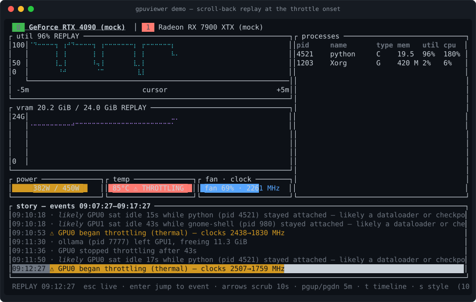
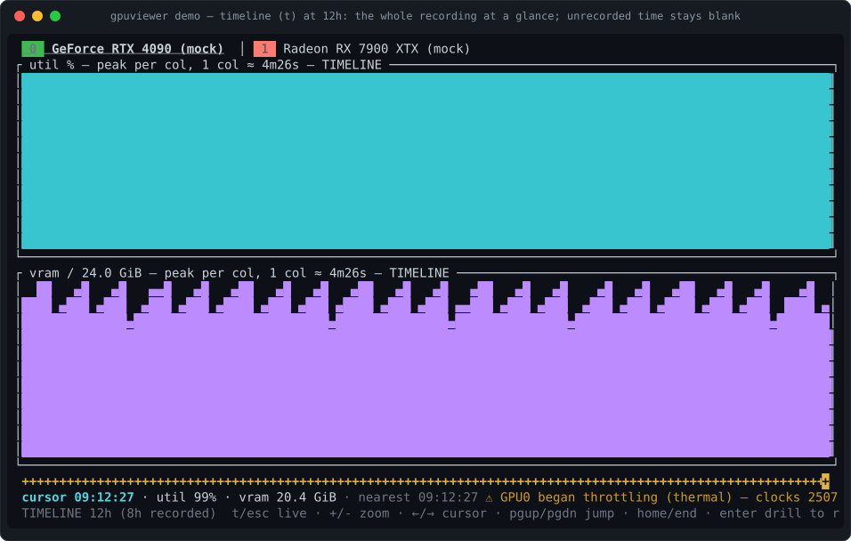

The GPU flight recorder
Your training run flatlined at 02:14. You were asleep. Every other GPU monitor would show you a beautiful live gauge — of a moment that no longer exists. gpuviewer keeps per-process history and a narrated event log just by being open, so the next morning you scroll back and read what happened, in plain English.
Drag the playhead, click an event tick, or use ← →
GPU0 throttling — thermal
clocks 2610 → 1725 MHz · temp 84 °C (slowdown 83 °C) · NVML clocks-event bitmask: SW_THERMAL_SLOWDOWN
Why it exists
A gauge tells you the present.
The present is lying about
the night.
Every GPU tool on your box samples right now and throws it away. That is fine when you are watching. It is useless at 09:00 when the run is dead, the process is gone, and the only evidence left is a loss curve that stops. gpuviewer's job is to still have the evidence — downsampled 10s and 1m rollups plus an append-only event log in a local SQLite file, written by the same binary you were already running. No daemon to install. No recording you had to remember to start.
One recording, three altitudes
The same recording answers three different questions. Single keys move between them —
spot the anomaly on the timeline, Enter to drill into replay at that exact
column, Esc back to live.
“What did the whole night look like?”
Hours of history as solid strips with an event lane underneath. Zooms 1h → 7d. Each column is the recorded peak — and time that was never recorded stays blank, never painted as zero.
“What exactly happened at 02:14?”
Full charts, process table, gauges and story feed at any recorded moment. Seeks anchor to events, so you land on the onset rather than near it.
“What is it doing right now?”
The ordinary monitor view — and it is recording the other two while you watch. Idle cadence backs off automatically so polling does not keep the GPU awake.

gpuviewer demo, simulated data and labeled as
such) opens already scrolled back to the night's last throttle onset — the first thing you
see is the answer, not a gauge.
The honesty contract
Anything that reads a story out of telemetry can invent one. These are the rules the code actually enforces, not aspirations — they are why you can trust the 02:14 answer.
A throttle bit that was set is a fact. “Your dataloader is starving the GPU” is an inference — it is labeled likely, always, and expands to the raw evidence it was derived from.
A metric the driver will not answer renders as unavailable, never as 0. An open throttle episode whose bitmask goes unreadable is dropped silently rather than closed with a fabricated “recovered”.
Charts never bridge a gap longer than 15 s. Time when gpuviewer was not running is a hole in the strip, and the footer tells you how much of the window is real.
NVML “utilization” means at least one kernel was resident — not that the GPU was saturated. It is labeled as duty-cycle rather than presented as capacity.
Reading other users' processes needs elevated privileges. Unprivileged, you get a “your processes only” hint instead of a list that quietly pretends to be complete.
Collector stalls, lost and returned devices, and session start/stop marks are events too — so a gap in the story is explained by the recorder, not left for you to guess at.
Support
Missing drivers degrade instead of failing, so the fastest way to find out what you get
on your machine is to run it — gpuviewer --mock works even with no GPU at
all. Found something off? Open
an issue — reports from real hardware are the most useful thing you can send.
| Platform | Vendors | Sources | Per-process |
|---|---|---|---|
| Linux | NVIDIA · AMD · Intel | NVML · sysfs / gpu_metrics · fdinfo (i915 + xe) | Yes — pid, VRAM, util, CPU%, container |
| Windows | NVIDIA · AMD · Intel | NVML · PDH · DXGI / D3DKMT | Yes — via PDH, where Task Manager misleads |
| macOS Apple Silicon |
Apple | Metal | No — the OS prohibits it for third-party tools |
On macOS the missing process table is an operating-system restriction, not a gap in the app — gpuviewer says so in the UI and blames the OS rather than going quiet. Device-level memory there is Metal's unified-memory working-set budget, which is not the same thing as discrete VRAM, and it is labeled that way.
Install
No daemon, no root, no kernel module. The installers verify a SHA-256 checksum before anything lands on disk. Prebuilt binaries are not code-signed — the release notes carry the Gatekeeper and SmartScreen steps.
$ curl -fsSL https://raw.githubusercontent.com/\
singhpratech/gpuviewer/main/install.sh | sh
> irm https://raw.githubusercontent.com/singhpratech/\
gpuviewer/main/install.ps1 | iex
$ cargo install --git https://github.com/singhpratech/gpuviewer \ gpuviewer-tui # needs Rust 1.95+
$ gpuviewer demo # 8h of simulated history, # opens scrolled back $ gpuviewer --mock # simulated live GPUs
Then, the next morning
$ gpuviewer report --since 12h # plain-text digest of the night $ gpuviewer export --since 12h out.gpvr # a shareable incident slice $ gpuviewer view out.gpvr # replay it anywhere — no GPU needed $ gpuviewer --json # NDJSON stream for scripting